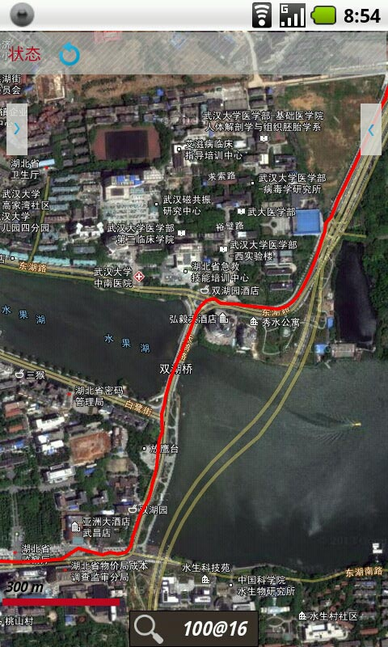
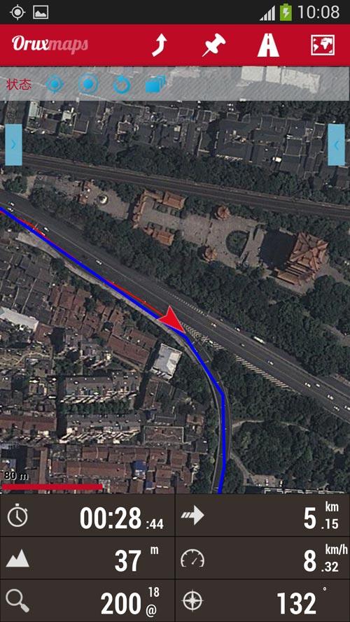
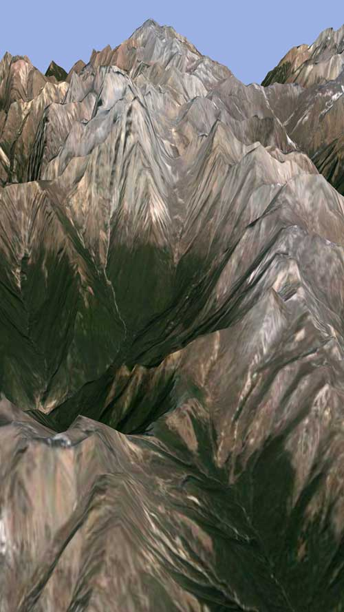
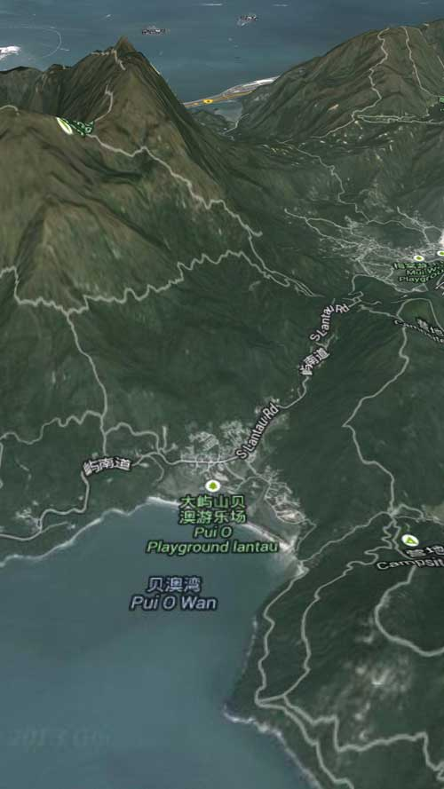

|
| 首页 | GeoTIFF | 今日花园Maps | OruxMaps | OZI | 资源 | 软件 | 联系 |
| 当前位置：首页 |
|
一、GeoTIFF格式卫星影像 GeoTIFF格式卫星影像是带有坐标信息的图像文件，谷歌卫星地图和天地图卫星地图都是Web Mercator坐标系统，国际标准代码是EPSG:3857，一些新版本的地理信息系统(GIS)软件已经支持该坐标系统。 本站提供一个GeoTIFF格式的北京18层谷歌卫星地图给大家测试使用，下载地址： 测试北京18层 本站可以下载谷歌卫星地图并制作成GeoTIFF格式图像文件，地图数据从谷歌国外服务器上获取，没有坐标偏移。 更多详情请见本站GeoTIFF栏目。 二、MBTiles格式离线卫星地图 MBTiles是一种通用的离线地图数据包格式，许多地图软件都兼容这种格式。本站制作的MBTiles格式离线卫星地图，卫星图片取自谷歌地图国外服务器，图片没有坐标偏移，能实现准确定位。地图包含多个层级，可以在多个层级之间缩放。地名标注来源于天地图。 下面提供一个MBTiles格式的中国4-10层卫星地图给大家免费测试使用，百度网盘地址： 中国4-10层卫星地图(G)(mbtiles).rar 在苹果IOS8.0以上版本的手机或者平板上安装 今日花园 Maps 应用程序，可以使用这种格式的离线卫星地图。 有关 今日花园 Maps 软件的详细信息，请看：今日花园 Maps 在线帮助 今日花园 Maps 软件截图如下所示：（图中使用的是18层分辨率的地图） |

|
今日花园 Maps 软件自带有离线的世界3-9层平面地图，在软件的在线帮助中还有免费的地图资源供大家下载使用。 MBTiles格式的卫星地图数据包也可以在WINDOWS系统的电脑上使用。请先在电脑上安装OruxWin软件。 OruxWin软件的下载地址及使用说明请看：OruxWin在线帮助 更多详情请见本站今日花园Maps栏目。 三、OruxMaps离线卫星地图 OruxMaps是安卓系统上最好用的户外导航软件，运行在安卓系统的手机或平板电脑上，功能强大。OruxMaps使用离线地图 时在没有网络手机信号的地方也能正常导航，卫星地图在野外无人区能提供丰富地理信息，是户外运动和探险必备的地图。 好消息：本站已开发出在Windows系统下运行的OruxMaps软件，软件名称为OruxWin，弥补了OruxMaps只能在安卓系统下运行的遗憾。详情请看：OruxWin在线帮助。 本站免费提供OruxMaps世界4-8层和全国3-10层离线卫星地图给大家试用，下载地址： 世界4-8层卫星地图(450M) 全国3-10层离线卫星地图(1.01G) 本站制作的谷歌卫星地图数据包含多层级的数据，在OruxMaps中可以实现多层级的缩放。数据包的图片都是从谷歌地图国外服务器上获取的，没有坐标偏移，所以地图可以实现准确的坐标定位。你可以将航迹导入到地图中来验证坐标的准确性。如下图所示： |



|
下图是三星Galaxy S4安装OruxMaps软件后使用OruxMaps离线卫星地图的效果图（图中使用的是18层分辨率的地图）。 |



|
OruxMaps在使用离线卫星地图时，如果加载了高程数据，还能显示三维卫星地图。本站可以提供各地区的高程数据文件。 |



|
更多详情请见本站OruxMaps栏目。 四、OziExplorer卫星地图 OziExplorer是一 款运行在WINDOWS电脑、WINCE系统导航仪上的导航软件，它也有安卓系统的版本。 本站免费提供全国9层OziExplorer卫星地图(190M)给大家试用，下载地址：china9.rar 下图是华创E路航LH980N车载GPS导航仪使用OziExplorer卫星地图的效果图（图中使用的是18层分辨率的地图）。 |


|
下图是中兴V880智能手机使用OziExplorer卫星地图的效果图（图中使用的是18层分辨率的地图）。 |
|
更多详情请见本站OZI栏目。 需要制作卫星影像和离线地图的用户请到本站的淘宝店购买。 |
| 天极下载 | 下载之家 |
| www.todaygarden.net |
版权所有 2010-2020 今日花园 鄂ICP备13001523号 |